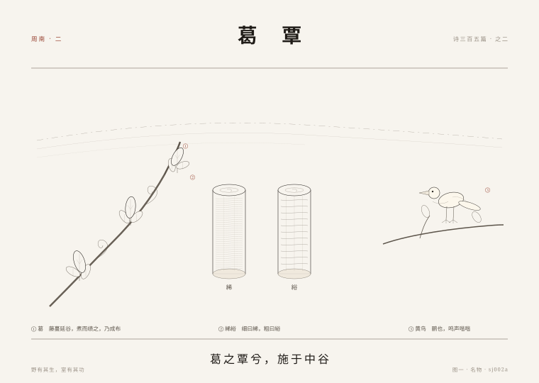
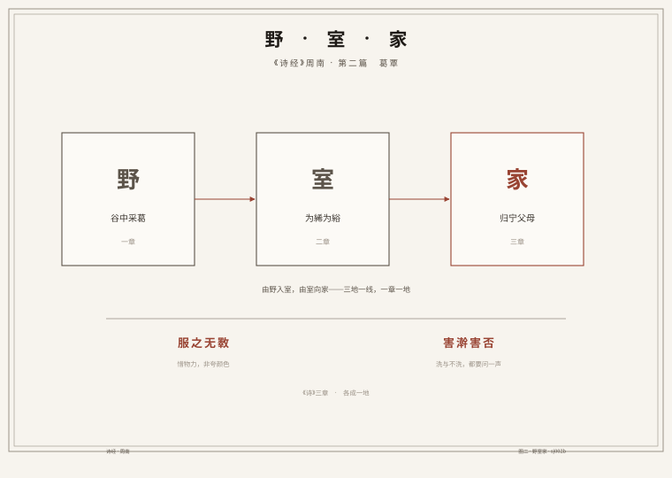

第二篇 葛覃
周南 · 之二 SJ002
朗读 · 普通话
依经文正文朗读，句读从文；不配乐、不改速、不加拖腔。
一 解题
诗三判：
- 谁在说：一位已嫁的女子。她有自己的女师（师氏），有要洗的里衣与外衣，有可以回去问安的父母。这不是少女怀春，是妇人将归。
- 说什么事：三章三地。山谷里采葛，家里织布，然后告师请归、洗濯衣裳、归宁父母。由野入室，由室向家。
- 为何编在此：《关雎》立夫妇之始，《葛覃》述妇事之常。前一首是「求配」，这一首是「既配之后」——妇功、妇礼、妇情，三样都在。编诗者以一首讲「如何成为夫妇」，又以一首讲「成了以后做什么」。
《毛序》：「《葛覃》，后妃之本也。后妃在父母家，则志在于女功之事，躬俭节用，服澣濯之衣，尊敬师傅，则可以归安父母，化天下以妇道也。」
朱子《诗集传》：「此诗之辞，乃见其女功之勤、孝敬之至，而所以自叙其归宁之意也。」——不坐实「后妃」，只说「女功之勤、孝敬之至」。本库从朱子：诗中无一处可证其为后妃，只说得出她勤、她俭、她敬师、她念父母。
二 经文
第一章
葛之覃兮，施于中谷，維葉萋萋。黃鳥于飛，集于灌木，其鳴喈喈。
第二章
葛之覃兮，施于中谷，維葉莫莫。旣是旣穫，爲絺爲綌，服之無斁。
第三章
言告師氏，言告言歸。薄汙我私，薄澣我衣。害澣害否？歸寧父母。
分章：毛传、朱子皆三章。三章即三地：谷中、室中、归途。不分更多，因为每章自成一个空间，再切就碎了。
三 韵读
| 一 |
萋、喈 |
脂部 |
| 二 |
莫、綌、斁 |
鐸部 |
| 三 |
歸、衣／否、母 |
微部／之部 |
一章「萋」「喈」同部，是叶与声相和——叶茂与鸟鸣本是一件事的两面。二章三个入声字连押，短促，正合「煮、织、成」一连串手上的活。三章转微、之两部，「归」「衣」一韵，「否」「母」一韵，音由促转缓，脚步慢下来了。
四 字义与名物
字义：
- 覃：延。毛传「覃，延也」。谓葛藤蔓延。
- 施（yì）：移、延及。毛传「施，移也」。
- 中谷：谷之中。
- 萋萋：盛貌。毛传「萋萋，茂盛貌」。
- 莫莫：密貌。毛传「莫莫，成就之貌」；朱子「莫莫，茂密也」。成就者，言其长成可采。
- 穫（濩）：煮。毛传「穫，煮之也」。葛必煮而后柔，可织。
- 絺：细葛布。綌：粗葛布。毛传「精曰絺，粗曰綌」。
- 斁（yì）：厌。毛传「斁，厌也」。「服之无斁」谓久服而不厌，非「好看」。
- 師氏：女师。毛传「师，女师也」。
- 薄：语辞。毛传「薄，辞也」。
- 汙：去污；澣：濯洗。二字一为去垢，一为漂洗，先后两道。
- 私：燕服（里衣）；衣：礼服。毛传「私，燕服也」。
- 害（hé）：何，通「曷」。「害澣害否」即「何者浣、何者不浣」。
- 歸寧：妇人归问父母之安。毛传「宁，安也」。
名物：
- 葛：豆科藤本，根可食（葛根），藤皮纤维可织。其纤维须煮、漂、劈、绩，方成纱。一章写其生，二章写其治，正是「从野到布」的全过程。
- 黄鸟：朱子「黄鸟，鹂也」，即黄莺；一说黄雀。鸣声清亮，春夏之交最盛。
- 灌木：丛生之木。毛传「灌木，丛木也」。
- 絺綌：粗细分等，是古代衣料的等级。细者暑服，粗者常服。《周礼·天官》有「典妇功」掌其法。
五 今译
一章 葛藤长长地蔓延，伸进山谷之中，叶子密密萋萋。黄鸟飞起，落在丛木上，叫得喈喈。
二章 葛藤长长地蔓延，伸进山谷之中，叶子密密莫莫。已经采了、已经煮了，织成细布、织成粗布，穿在身上不厌。
三章 告诉女师，说我要回去。洗我的里衣，洗我的外衣。哪些洗、哪些不洗？回去问安父母。
六 章旨
一章 写生：葛在谷，叶在长，鸟在鸣。全是外景，一句不及人——先让人看见地方。
二章 写手：采、煮、织，三步一气。「服之无斁」四字最重，不是夸衣好，是说这衣裳来得不易，舍不得厌。
三章 写心：一句「言告师氏」，礼在先；一句「害澣害否」，细在末；结以「归宁父母」，情在终。
总收：三章一路走，从谷走到家。走的不是路，是「物—事—人」三层：物有其生，事有其功，人有其亲。诗不说道理，只把这三层依次摆开。
七 诗教
- 兴：首章以葛起，以鸟承。葛是「将治之物」，鸟是「将鸣之声」——一静一动，兴起的是「时令已至，事当起手」。
- 观：可观三事——物力之艰（采、煮、织三步不省）、妇礼之严（先告师氏，后言归）、人情之细（洗与不洗都要问一声）。
- 群：可与共读者，是「俭」与「敬」二字的合体。俭不是吝，敬不是畏；她舍不得那件衣裳，也舍不得失礼。
- 怨：此篇无怨。全篇没有一个「苦」字，「勤」写到极处也不带怨气。这是《周南》的底色：劳而不怨。
八 分寸与边界
- 不可把它读成《毛序》「后妃之本」的道德档案。若先认定主角是后妃，则「薄汙我私」成了示范，「害澣害否」成了做作的节俭。朱子已不取《序》的坐实，本库从朱子。
- 不可把「归」读成出嫁。诗中有「师氏」、有「归宁父母」，明是已嫁归省；若读作嫁，则「归宁」二字无处安放，全篇落空。
- 不可把「服之无斁」读成「衣服好看，穿不厌」。此句讲的是物力，不是颜色；读成审美，就把二章的手上功夫读没了。
- 不可把三章读成平列的三段。它是有方向的：野→室→家。方向一失，诗就成了一篇农桑说明书。
- 不可因它写女功，就把它降格为「古代纺织教材」。织布只是路径，落点在「归宁父母」四字；写物是为了写人。
九 存疑
- 本事：《毛序》谓「后妃之本」；朱子只说「女功之勤、孝敬之至」，不指实其人。本库不指实。
- 「覃」之训：毛传「延也」；一说覃为长貌、深貌。二说可通，本库从毛传。
- 「黄鸟」为何鸟：朱子谓鹂（黄莺），一说黄雀。二者鸣声皆清，诗中取「喈喈」之和，不取种属。
- 「私」与「衣」之分：毛传「私，燕服」，衣为礼服；一说私为内衣、衣为外衣。二说角度不同，本库并存。
- 「害澣害否」句读：一读「何者当浣、何者不当浣」，一读「曷浣、曷否」为两问并列。语气略异，意思不异。
- 「歸」字两义：毛传「妇人谓嫁曰归」，而此诗之「归」实为归宁。汉儒以「嫁」训「归」为通例，此处须以文定训，不可以例定训。
十 跨典
- 《礼记·内则》：妇人先嫁三月，教于公宫，「教以妇德、妇言、妇容、妇功」。——「师氏」之制，于此可证。诗中的「言告师氏」，不是虚构的礼貌。
- 《周礼·天官·典妇功》：「掌妇式之法，以授嫔妇及内人女功之事。」——絺綌有法有式，可见「为絺为綌」不是家常随手的活。
- 《礼记·昏义》：「成妇礼，明妇顺。」——「归宁」之所以为礼，正因为妇顺已成，归而问安，是顺的延续。
- 《论语·阳货》17.9：「诗可以兴，可以观，可以群，可以怨。」——本库「诗教」四问所出。
- 《召南·采蘩》：「于以采蘩？于沼于沚。于以用之？公侯之事。」——同为「采物—治物—奉事」的结构。一采蘩以奉祭，一采葛以成衣；两篇对读，可见《周南》《召南》共同的「物—事」写法。
十一 双卡与图
双卡五对：
| 葛之覃（野） |
歸寧父母（家） |
| 維葉萋萋（生） |
爲絺爲綌（成） |
| 黃鳥喈喈（声） |
服之無斁（惜） |
| 言告師氏（礼） |
害澣害否（细） |
| 勤 |
敬 |

图一 · 葛与絺綌 名物图

图二 · 野室家 义理图
读图三处：
- 葛的藤与叶：藤蔓右行、卷须勾住，叶是三出——一章「施于中谷」写的就是这条藤的去向；二章「既是既获」写的则是它被采走之后。
- 两卷布：细者絺、粗者綌。并置而不分高低，因为诗里也不分——只说「服之无斁」。
- 三步的方向：野、室、家。第三格作赭，不是说「归」比「织」重，是说全篇的落点在那里：一切手上功夫，最后都为着回去问一声安。